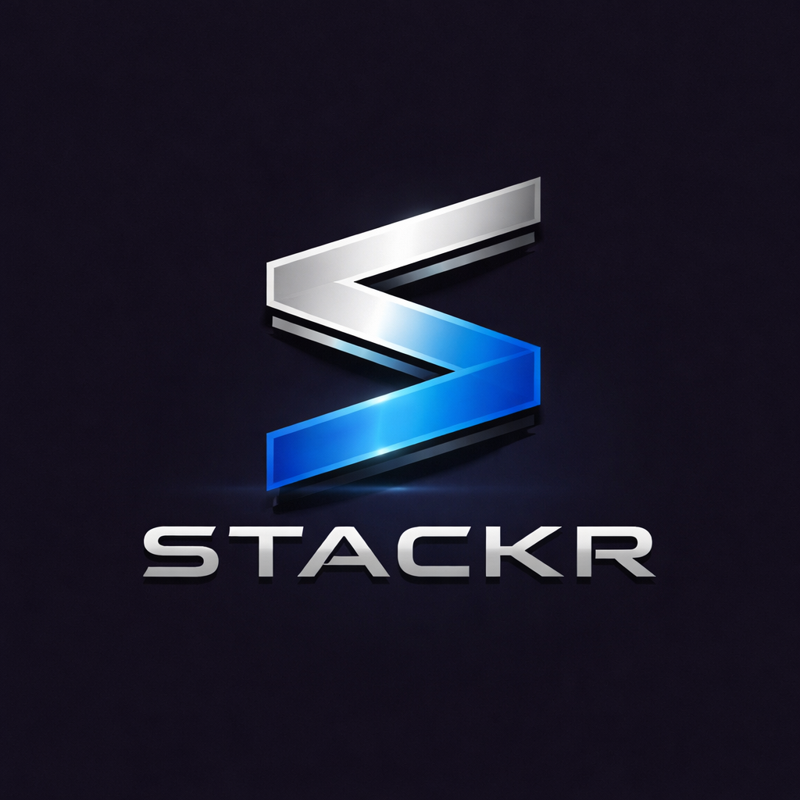

Track every supplement, peptide, and medication in one app. Reconstitution calculator, protocol scheduling, and smart reorder alerts so you never run out mid-protocol.
Know exactly when you'll run out. Color-coded urgency alerts at 14, 7, and 3 days remaining.
Enter vial size and dose, get exact syringe markings for U100, U40, or standard. Supports mg, mcg, and IU.
Build custom protocols. Schedule daily, specific days, or every X days. Log doses and track wellness.
Get notified before you run out with shipping time factored in. Never miss a dose.
Everything stored on your device. No accounts required. No tracking. No ads.
Optionally back up with just an email. Sync across devices. Your data, your control.
Stackr is a personal supply tracking tool and is not intended to provide medical advice, diagnosis, or treatment. Always consult a qualified healthcare professional before starting, stopping, or changing any supplement, medication, or protocol.